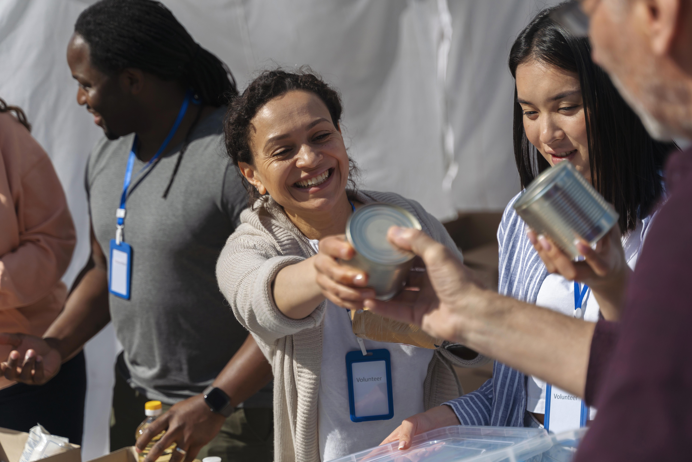

¡Actúa para cambiar el mundo!
Fomentamos el vínculo entre empresas y organizaciones civiles para generar un impacto positivo en la sociedad. Descubrí diferentes maneras de involucrar tu organización con la sociedad.

Soluciones para empresas
Generamos un medio para que las empresas se involucren en actividades de responsabilidad social. ¡Creá un grupo de voluntarios en tu organización y se parte del cambio!.
Soluciones para organizaciones
Apoyamos a las organizaciones sociales para que alcancen sus objetivos. Ponemos a su disposición una comunidad de voluntarios dispuestos a apoyarlas en sus necesidades. Equipos de voluntarios por empresas dispuestos a potenciar tu impacto en la sociedad.
Encuentra las mejores oportunidades
La plataforma cuenta con gran variedad de proyectos locales (sociales, educativos y medioambientales), donde encontraras el que mejor se adapte a la experiencia que estás buscando. Te ayudamos en la coordinación con la organización de forma simple y rápida.


Ser voluntario

Donar

Reciclar